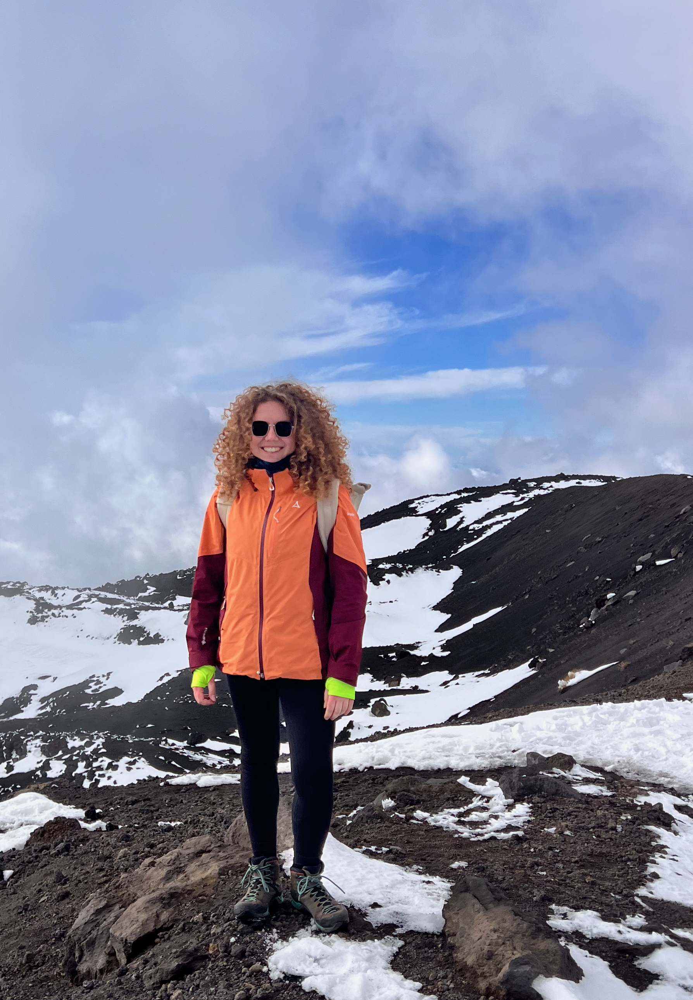

Data Science & Public Policy
I am a researcher and data scientist working at the intersection of public policy, AI, and social science. My work focuses on gender pay equity, media bias, disinformation, and the societal impact of algorithmic systems.

I am an interdisciplinary researcher with a background in political science and data science. I hold an M.Sc. in Data Science for Public Policy and a Master of Public Policy from the Hertie School in Berlin, as well as a B.A. in Political Science. My work combines social science questions with machine learning and natural language processing.
I currently work as a Social Data Scientist at INES Analytics GmbH, where I lead research and data analysis for Compass-W, a project with a German Federal Ministry on measuring job equivalence and pay equity. In parallel, I collaborate with researchers at the University of Amsterdam and the University of Mainz on media and campaign monitoring, developing multimodal pipelines for the analysis of political communication.
My research focuses on how information, algorithms, and institutions shape democratic societies. Methodologically, I work with machine learning, natural language processing, and applied statistics, often in interdisciplinary projects that bridge computer science and political science.
Collaboration with researchers at the University of Amsterdam and the University of Mainz on monitoring political campaigns and media content. I work on a multimodal classification pipeline that combines OCR, CLIP-style image models, and large language models to analyse campaign material in German and Dutch elections.
Lead data scientist for Compass-W, a project in cooperation with a German Federal Ministry that develops an index to measure equal and fair work. Responsibilities include survey design, data analysis, index construction and validation, and communicating results in reports and workshops.
Development of a two-stage machine-learning framework that extrapolates bike volume and predicts exposure-based accident risk using rich spatial and temporal data. The project covers the full pipeline from data collection and feature engineering to model comparison and evaluation.
Eine Auswahl akademischer Texte, die meine Arbeit an der Schnittstelle von Politikwissenschaft, Methodik und empirischer Sozialforschung dokumentieren.
Caught between Green and Right: Mainstream Parties and the Genesis of a New Political Cleavage
Georg-August-Universität Göttingen · B.A. Politikwissenschaft · Sommersemester 2021
Die Arbeit untersucht, wie die deutschen Mainstreamparteien CDU/CSU und SPD auf die Entstehung einer neuen globalisierungsbedingten Konfliktlinie reagieren. Ausgangspunkt ist die in der Forschungsliteratur diagnostizierte Herausbildung einer Spaltung zwischen kosmopolitischen und kommunitaristischen Positionen, die durch Globalisierungsprozesse angetrieben wird (Kriesi et al.; Koopmans/Zürn) und neue Nischenparteien an beiden Polen begünstigt.
Auf Basis von Meguids (2005) Modell der Mainstreampartei-Strategien gegenüber Nischenparteien – Anpassung, Ablenkung oder Ablehnung – sowie der Cleavage-Theorie nach Lipset und Rokkan wird mittels quantitativer Inhaltsanalyse (MAXQDA) untersucht, wie sich die Wahlprogramme von CDU/CSU und SPD zwischen den Bundestagswahlen 2013 und 2017 verändert haben. Analysiert werden sieben thematische Kategorien: Migration, EU-Integration, Umwelt, Sicherheit, Diversität & Gleichstellung sowie internationale Wirtschafts- und politische Integration.
Die Ergebnisse zeigen, dass beide Parteien der Konfliktlinie 2017 mehr programmatischen Raum widmeten. Die Union reagierte auf die erstarkte AfD mit einer Anpassungsstrategie auf der kulturellen Achse (Migration), blieb auf der wirtschaftlichen und politischen Achse jedoch kosmopolitisch. Die SPD orientierte sich stärker an soziokulturellen Fachkräften und wählte tendenziell kosmopolitische Positionen, ohne dabei eine kohärente strategische Ausrichtung im Sinne Meguids zu entwickeln. Keine der beiden Parteien wendet eine konsistente Nischenpartei-Strategie an – beide bleiben im Spagat zwischen Grün und Rechts gefangen.
Focus on machine learning, natural language processing, and AI governance. Master's thesis on bike volume extrapolation and exposure-based accident risk.
Focus on statistical methods and democracies in the digital age. Master's thesis on foreign disinformation operations and offline consequences.
Focus on democracy studies and quantitative methods. Bachelor's thesis on mainstream parties and new political cleavages.
Research on political communication and campaigning in Dutch elections. Development of a multimodal classification pipeline combining OCR, image models, and language models for automated annotation of campaign material.
Lead on Compass-W, a project with a German Federal Ministry on job equivalence and pay equity. Responsibilities include survey design, data analysis, index construction and validation, NLP-based text classification, project management, and communication of results.
Independent research on synthetic data for anonymising HR data, and technical implementation of KPI calculations for the company's analytics product (Python).
Organisation of a multi-day DataScience4Good festival; development of workshop materials for a hackathon; preparation of datasets for teaching and competition use.
Roles at the Hertie Foundation, Berlin Global Advisors, ifok GmbH, and the Göttingen District, focusing on digital education, citizen participation, integration policy, and stakeholder engagement.
Python, R, SQL
scikit-learn, XGBoost, PyTorch, TensorFlow
spaCy, Hugging Face Transformers, NLTK
Git, LaTeX, Power BI, survey design, index construction, causal and predictive modelling
German (native), English (C1/C2)
Team award (first prize) at a German political-tech hackathon for developing a GenAI-tracker dashboard for political ads, including funding for further development.
Hans N. Weiler stipend from the Hertie School, supporting double degree studies in Data Science and Public Policy.
Experience as a mentor, organiser of student conferences, volunteer in homelessness support, and youth work and mentoring roles in church and civic organisations.
I am open to collaborations on projects related to media bias, disinformation, pay equity, and data science for public policy.
INES Analytics GmbH
Hertie School (alumna)
Collaborative projects with University of Amsterdam and University of Mainz
Berlin, Germany